snewal
hi, currently under development!
since this site is mainly for eaglercraft, here are these for the time being
Eaglercraft (if you dont know what to choose, do 1.8.8 ;)
EaglercraftX 1.8.8 (build u29) - UP TO DATE
Eaglercraft 1.5.2 - OLD VERSION, 1.8.8 RECCOMENDED
Eaglercraft Beta 1.3 - OLDER MINECRAFT
MISC MINECRAFT VERSION PORTS -
Minecraft Alpha 1.2.6 - seperate project from eagler
(C) Absolute Buffoonery Incorporated